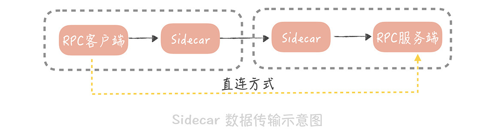
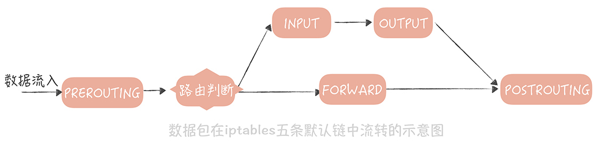
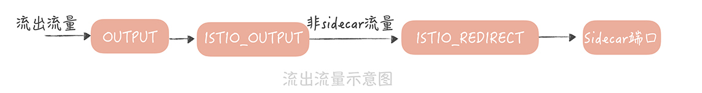

- 00 开篇词 为什么你要学习高并发系统设计？.md.html
- 01 高并发系统：它的通用设计方法是什么？.md.html
- 02 架构分层：我们为什么一定要这么做？.md.html
- 03 系统设计目标（一）：如何提升系统性能？.md.html
- 04 系统设计目标（二）：系统怎样做到高可用？.md.html
- 05 系统设计目标（三）：如何让系统易于扩展？.md.html
- 06 面试现场第一期：当问到组件实现原理时，面试官是在刁难你吗？.md.html
- 07 池化技术：如何减少频繁创建数据库连接的性能损耗？.md.html
- 08 数据库优化方案（一）：查询请求增加时，如何做主从分离？.md.html
- 09 数据库优化方案（二）：写入数据量增加时，如何实现分库分表？.md.html
- 10 发号器：如何保证分库分表后ID的全局唯一性？.md.html
- 11 NoSQL：在高并发场景下，数据库和NoSQL如何做到互补？.md.html
- 12 缓存：数据库成为瓶颈后，动态数据的查询要如何加速？.md.html
- 13 缓存的使用姿势（一）：如何选择缓存的读写策略？.md.html
- 14 缓存的使用姿势（二）：缓存如何做到高可用？.md.html
- 15 缓存的使用姿势（三）：缓存穿透了怎么办？.md.html
- 16 CDN：静态资源如何加速？.md.html
- 17 消息队列：秒杀时如何处理每秒上万次的下单请求？.md.html
- 18 消息投递：如何保证消息仅仅被消费一次？.md.html
- 19 消息队列：如何降低消息队列系统中消息的延迟？.md.html
- 20 面试现场第二期：当问到项目经历时，面试官究竟想要了解什么？.md.html
- 21 系统架构：每秒1万次请求的系统要做服务化拆分吗？.md.html
- 22 微服务架构：微服务化后，系统架构要如何改造？.md.html
- 23 RPC框架：10万QPS下如何实现毫秒级的服务调用？.md.html
- 24 注册中心：分布式系统如何寻址？.md.html
- 25 分布式Trace：横跨几十个分布式组件的慢请求要如何排查？.md.html
- 26 负载均衡：怎样提升系统的横向扩展能力？.md.html
- 27 API网关：系统的门面要如何做呢？.md.html
- 28 多机房部署：跨地域的分布式系统如何做？.md.html
- 29 Service Mesh：如何屏蔽服务化系统的服务治理细节？.md.html
- 30 给系统加上眼睛：服务端监控要怎么做？.md.html
- 31 应用性能管理：用户的使用体验应该如何监控？.md.html
- 32 压力测试：怎样设计全链路压力测试平台？.md.html
- 33 配置管理：成千上万的配置项要如何管理？.md.html
- 34 降级熔断：如何屏蔽非核心系统故障的影响？.md.html
- 35 流量控制：高并发系统中我们如何操纵流量？.md.html
- 36 面试现场第三期：你要如何准备一场技术面试呢？.md.html
- 37 计数系统设计（一）：面对海量数据的计数器要如何做？.md.html
- 38 计数系统设计（二）：50万QPS下如何设计未读数系统？.md.html
- 39 信息流设计（一）：通用信息流系统的推模式要如何做？.md.html
- 40 信息流设计（二）：通用信息流系统的拉模式要如何做？.md.html
- 加餐 数据的迁移应该如何做？.md.html
- 期中测试 10道高并发系统设计题目自测.md.html
- 用户故事 从“心”出发，我还有无数个可能.md.html
- 结束语 学不可以已.md.html
- 捐赠
29 Service Mesh：如何屏蔽服务化系统的服务治理细节？
你好，我是唐扬。
在分布式服务篇的前几节课程中，我带你了解了在微服务化过程中，要使用哪些中间件解决服务之间通信和服务治理的问题，其中就包括：
用 RPC 框架解决服务通信的问题；
用注册中心解决服务注册，和发现的问题；
使用分布式 Trace 中间件，排查跨服务调用慢请求；
使用负载均衡服务器，解决服务扩展性的问题；
在 API 网关中植入服务熔断、降级和流控等服务治理的策略。
经历了这几环之后，你的垂直电商系统基本上，已经完成了微服务化拆分的改造。不过，目前来看，你的系统使用的语言还是以 Java 为主，之前提到的服务治理的策略，和服务之间通信协议也是使用 Java 语言来实现的。
那么这会存在一个问题：一旦你的团队中，有若干个小团队开始尝试使用 Go 或者 PHP，来开发新的微服务，那么在微服务化过程中，一定会受到挑战。
跨语言体系带来的挑战
其实，一个公司的不同团队，使用不同的开发语言是比较常见的。比如，微博的主要开发语言是 Java 和 PHP，近几年也有一些使用 Go 开发的系统。而使用不同的语言开发出来的微服务，在相互调用时会存在两方面的挑战：
一方面，服务之间的通信协议上，要对多语言友好，要想实现跨语言调用，关键点是选择合适的序列化方式。我给你举一个例子。
比如，你用 Java 开发一个 RPC 服务，使用的是 Java 原生的序列化方式，这种序列化方式对于其它语言并不友好，那么，你使用其它语言，调用这个 RPC 服务时，就很难解析序列化之后的二进制流。所以，我建议你，在选择序列化协议时，考虑序列化协议是否对多语言友好，比如，你可以选择 Protobuf、Thrift，这样一来，跨语言服务调用的问题，就可以很容易地解决了。
另一方面，使用新语言开发的微服务，无法使用之前积累的，服务治理的策略。比如说，RPC 客户端在使用注册中心，订阅服务的时候，为了避免每次 RPC 调用都要与注册中心交互，一般会在 RPC 客户端，缓存节点的数据。如果注册中心中的服务节点发生了变更，那么 RPC 客户端的节点缓存会得到通知，并且变更缓存数据。
而且，为了减少注册中心的访问压力，在 RPC 客户端上，我们一般会考虑使用多级缓存（内存缓存和文件缓存）来保证节点缓存的可用性。而这些策略在开始的时候，都是使用 Java 语言来实现的，并且封装在注册中心客户端里，提供给 RPC 客户端使用。如果更换了新的语言，这些逻辑就都要使用新的语言实现一套。
除此之外，负载均衡、熔断降级、流量控制、打印分布式追踪日志等等，这些服务治理的策略都需要重新实现，而使用其它语言重新实现这些策略无疑会带来巨大的工作量，也是中间件研发中，一个很大的痛点。
那么，你要如何屏蔽服务化架构中，服务治理的细节，或者说，如何让服务治理的策略在多语言之间复用呢？
可以考虑将服务治理的细节，从 RPC 客户端中拆分出来，形成一个代理层单独部署。这个代理层可以使用单一的语言实现，所有的流量都经过代理层，来使用其中的服务治理策略。这是一种“关注点分离”的实现方式，也是 Service Mesh 的核心思想。
Service Mesh 是如何工作的
1. 什么是 Service Mesh
Service Mesh 主要处理服务之间的通信，它的主要实现形式就是在应用程序同主机上部署一个代理程序，一般来讲，我们将这个代理程序称为“Sidecar（边车）”，服务之间的通信也从之前的，客户端和服务端直连，变成了下面这种形式：

在这种形式下，RPC 客户端将数据包先发送给，与自身同主机部署的 Sidecar，在 Sidecar 中经过服务发现、负载均衡、服务路由、流量控制之后，再将数据发往指定服务节点的 Sidecar，在服务节点的 Sidecar 中，经过记录访问日志、记录分布式追踪日志、限流之后，再将数据发送给 RPC 服务端。
这种方式，可以把业务代码和服务治理的策略隔离开，将服务治理策略下沉，让它成为独立的基础模块。这样一来，不仅可以实现跨语言，服务治理策略的复用，还能对这些 Sidecar 做统一的管理。
目前，业界提及最多的 Service Mesh 方案当属istio， 它的玩法是这样的：
它将组件分为数据平面和控制平面，数据平面就是我提到的 Sidecar（Istio 使用Envoy作为 Sidecar 的实现）。控制平面主要负责服务治理策略的执行，在 Istio 中，主要分为 Mixer、Pilot 和 Istio-auth 三部分。
你可以先不了解每一部分的作用，只知道它们共同构成了服务治理体系就可以了。
然而，在 Istio 中，每次请求都需要经过控制平面，也就是说，每次请求都需要跨网络的调用 Mixer，这会极大地影响性能。
因此，国内大厂开源出来的 Service Mesh 方案中，一般只借鉴 Istio 的数据平面和控制平面的思路，然后将服务治理策略做到了 Sidecar 中，控制平面只负责策略的下发，这样就不需要每次请求都经过控制平面，性能上会改善很多。
2. 如何将流量转发到 Sidecar 中
在 Service Mesh 的实现中，一个主要的问题，是如何尽量无感知地引入 Sidecar 作为网络代理，也就是说，无论是数据流入还是数据流出时，都要将数据包重定向到 Sidecar 的端口上。实现思路一般有两个：
第一种，使用 iptables 的方式来实现流量透明的转发，而 Istio 就默认了，使用 iptables 来实现数据包的转发。为了能更清晰的说明流量转发的原理，我们先简单地回顾一下什么是 iptables。
Iptables 是 Linux 内核中，防火墙软件 Netfilter 的管理工具，它位于用户空间，可以控制 Netfilter，实现地址转换的功能。在 iptables 中默认有五条链，你可以把这五条链，当作数据包流转过程中的五个步骤，依次为 PREROUTING，INPUT，FORWARD，OUTPUT 和 POSTROUTING。数据包传输的大体流程如下：

从图中可以看到，数据包以 PREROUTING 链作为入口，当数据包目的地为本机时，它们也都会流经到 OUTPUT 链。所以，我们可以在这两个链上，增加一些规则，将数据包重定向。我以 Istio 为例，带你看看如何使用 iptables 实现流量转发。
在 Istio 中，有一个叫做“istio-iptables.sh”的脚本，这个脚本在 Sidecar 被初始化的时候执行，主要是设置一些 iptables 规则。
我摘录了一些关键点来说明一下：
// 流出流量处理
iptables -t nat -N ISTIO_REDIRECT // 增加 ISTIO_REDIRECT 链处理流出流量
iptables -t nat -A ISTIO_REDIRECT -p tcp -j REDIRECT --to-port "${PROXY_PORT}" // 重定向流量到 Sidecar 的端口上
iptables -t nat -N ISTIO_OUTPUT // 增加 ISTIO_OUTPUT 链处理流出流量
iptables -t nat -A OUTPUT -p tcp -j ISTIO_OUTPUT// 将 OUTPUT 链的流量重定向到 ISTIO_OUTPUT 链上
for uid in ${PROXY_UID}; do
iptables -t nat -A ISTIO_OUTPUT -m owner --uid-owner "${uid}" -j RETURN //Sidecar 本身的流量不转发
done
for gid in ${PROXY_GID}; do
iptables -t nat -A ISTIO_OUTPUT -m owner --gid-owner "${gid}" -j RETURN //Sidecar 本身的流量不转发
done
iptables -t nat -A ISTIO_OUTPUT -j ISTIO_REDIRECT // 将 ISTIO_OUTPUT 链的流量转发到 ISTIO_REDIRECT
// 流入流量处理
iptables -t nat -N ISTIO_IN_REDIRECT // 增加 ISTIO_IN_REDIRECT 链处理流入流量
iptables -t nat -A ISTIO_IN_REDIRECT -p tcp -j REDIRECT --to-port "${PROXY_PORT}" // 将流入流量重定向到 Sidecar 端口
iptables -t ${table} -N ISTIO_INBOUND // 增加 ISTIO_INBOUND 链处理流入流量
iptables -t ${table} -A PREROUTING -p tcp -j ISTIO_INBOUND // 将 PREROUTING 的流量重定向到 ISTIO_INBOUND 链
iptables -t nat -A ISTIO_INBOUND -p tcp --dport "${port}" -j ISTIO_IN_REDIRECT // 将 ISTIO_INBOUND 链上指定目的端口的流量重定向到 ISTIO_IN_REDIRECT 链
假设服务的节点部署在 9080 端口上，Sidecar 开发的端口是 15001，那么流入流量的流向如下：
流出流量的流量图如下：

Iptables 方式的优势在于，对于业务完全透明，业务甚至不知道有 Sidecar 存在，这样会减少业务接入的时间。不过，它也有缺陷，那就是它是在高并发下，性能上会有损耗，因此国内大厂采用了另外一种方式：轻量级客户端。
在这种方式下，RPC 客户端会通过配置的方式，知道 Sidecar 的部署端口，然后通过一个轻量级客户端，将调用服务的请求发送给 Sidecar，Sidecar 在转发请求之前，先执行一些服务治理的策略，比如说，从注册中心中，查询到服务节点信息并且缓存起来，然后从服务节点中，使用某种负载均衡的策略选出一个节点等等。
请求被发送到服务端的 Sidecar 上后，然后在服务端记录访问日志，和分布式追踪日志，再把请求转发到真正的服务节点上。当然，服务节点在启动时，会委托服务端 Sidecar，向注册中心注册节点，Sidecar 也就知道了真正服务节点部署的端口是多少。整个请求过程如图所示：
当然，除了 iptables 和轻量级客户端两种方式外，目前在探索的方案还有Cilium，这个方案可以从 Socket 层面实现请求的转发，也就可以避免 iptables 方式在性能上的损耗。在这几种方案中，我建议你使用轻量级客户端的方式，这样虽然会有一些改造成本，但是却在实现上最简单，可以快速的让 Service Mesh 在你的项目中落地。
当然，无论采用哪种方式，你都可以实现将 Sidecar 部署到，客户端和服务端的调用链路上，让它代理进出流量，这样，你就可以使用运行在 Sidecar 中的服务治理的策略了。至于这些策略我在前面的课程中都带你了解过（你可以回顾 23 至 26 讲的课程），这里就不再赘述了。
与此同时，我也建议你了解目前业界一些开源的 Service Mesh 框架，这样在选择方案时可以多一些选择。目前在开源领域比较成熟的 Service Mesh 框架有下面几个，你可以通过阅读它们的文档来深入了解，作为本节课的引申阅读。
Istio 这个框架在业界最为著名，它提出了数据平面和控制平面的概念，是 Service Mesh 的先驱，缺陷就是刚才提到的 Mixer 的性能问题。
Linkerd 是第一代的 Service Mesh，使用 Scala 语言编写，其劣势就是内存的占用。
SOFAMesh 是蚂蚁金服开源的 Service Mesh 组件，在蚂蚁金服已经有大规模落地的经验。
课程小结
本节课，为了解决跨语言场景下，服务治理策略的复用问题，我带你了解了什么是 Service Mesh 以及如何在实际项目中落地，你需要的重点内容如下：
1.Service Mesh 分为数据平面和控制平面。数据平面主要负责数据的传输；控制平面用来控制服务治理策略的植入。出于性能的考虑，一般会把服务治理策略植入到数据平面中，控制平面负责服务治理策略数据的下发。
2.Sidecar 的植入方式目前主要有两种实现方式，一种是使用 iptables 实现流量的劫持；另一种是通过轻量级客户端来实现流量转发。
目前，在一些大厂中，比如微博、蚂蚁金服，Service Mesh 已经开始在实际项目中大量的落地实践，而我建议你持续关注这项技术。它本身是一种将业务与通信基础设施分离的技术，如果你的业务上遇到多语言环境下，服务治理的困境，如果你的遗留服务，需要快速植入服务治理策略，如果你想要将你在服务治理方面积累的经验，快速地与其他团队共享，那么 Service Mesh 就是你的一个不错的选择。
© 2019 - 2023 Liangliang Lee. Powered by gin and hexo-theme-book.